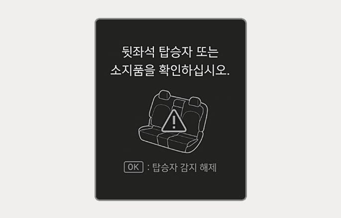
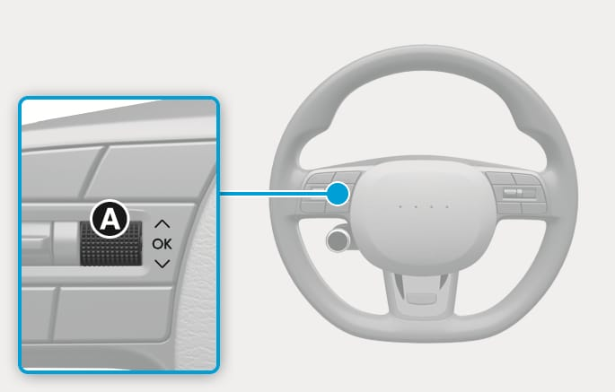
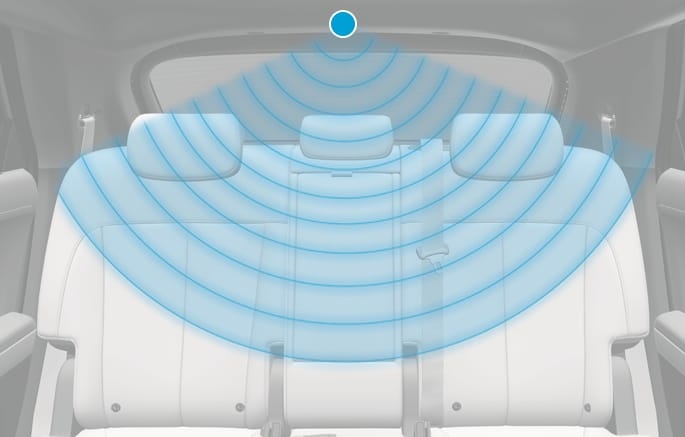

어드밴스드 후석 승객 알림 사용하기
-
차량에서 내리기 전에 뒷좌석에 탑승자가 있는지 직접 확인하십시오.
운전자가 차량을 떠나기 전 뒷좌석 탑승자를 확인하도록 경고를 제공합니다.
인포테인먼트 시스템에서 설정 > 차량 > 편의 > 후석 승객 알림을 선택해 기능을 켜거나 끌 수 있습니다.
-
1차 알림
뒷좌석 도어나 테일게이트(사양 적용 시)를 열고 닫은 후에 시동을 끄고 운전석 도어를 열면, 클러스터에 '뒷좌석 탑승자 또는 소지품을 확인하십시오' 경고문을 표시합니다.
-
2차 알림
-
1차 알림 후에 운전석 도어를 닫고 전체 도어를 잠갔을 때, 차 안에서 움직임이 감지되면 2차 알림이 작동합니다. 약 25초 동안 경고음과 비상 경고등이 작동하며, 블루링크 서비스 가입자에게는 문자를 발송합니다. 움직임이 계속 감지되면, 최대 8회까지 알림이 작동합니다. 알림을 멈추려면 스마트 키로 도어를 잠금 해제하십시오.
-
어드밴스드 후석 승객 알림은 도어가 잠긴 후 10분 동안 차 안에 움직임을 감지합니다.
-
-
2차 알림은 센서 적용 시에만 작동합니다.
-
1차 알림이 먼저 작동하지 않은 상태에서는 2차 알림은 작동하지 않습니다.
-
어드밴스드 후석 승객 알림의 2차 알림 기능을 사용하지 않으려면 클러스터 내 1차 알림이 표시될 때 스티어링 휠에 있는 OK 버튼(A)을 누르십시오. 2차 알림이 1회 해제됩니다.
클러스터
2C_CheckRearSeat
스티어링 휠
2C_SteeringWheelOkButton
-
원격 시동 상태에서는 실내 움직임 감지가 중지됩니다.
-
블루링크 가입자는 앱을 통해 알람을 멈출 수 있습니다.

2C_RearSeatROASensor
-
모든 유리창이 닫혀 있는지 확인하십시오. 유리창이 열려 있으면, 센서가 의도치 않은 움직임을 감지하여 알림이 작동할 수 있습니다.(예: 바람 또는 벌레가 날아 들어옴 등)
-
운전석 및 동승석 등 이외의 영역에서 움직임이 감지되면 알림이 작동할 수 있습니다.
-
도어가 잠긴 상태에서 실내에 머무르는 경우에도 알림이 작동할 수 있습니다.
-
차체에 충격이 가해질 경우 알림이 발생할 수 있습니다.
-
차 안에 박스나 물건들이 높게 쌓여 있으면 센서가 움직임을 감지하지 못할 수 있습니다. 반대로, 박스나 물건들이 떨어지면 알람이 발생할 수 있습니다.
-
차량이 잠긴 후 차를 밀거나 흔들 경우 또는 세차를 하거나 주변의 진동 또는 소음에 의해 알림이 작동할 수 있습니다.
-
차량 실내에 비치해 놓은 금속체, 액체류, 완구류에 의해 의도치 않은 알림이 발생할 수 있습니다.
-
뒷좌석 이외의 영역에서는 움직임이 감지되지 않습니다.
어드밴스드 후석 승객 알림이 장착되어 있더라도 항상 내리기 전에 뒷좌석을 확인하십시오.
다음과 같은 상황에서는 어드밴스드 후석 승객 알림이 작동하지 않을 수 있습니다. 탑승자의 안전 사고에 항상 유의하십시오.
-
일정 시간 움직임이 거의 없거나 적은 경우
-
유아가 어린이 보조 좌석에 앉아 있지 않을 경우
-
차량 시트 또는 어린이 보조 좌석의 가림으로 인해 감지 신호가 약한 경우(예, 영유아 보조좌석을 앞보기 자세로 장착 등)
-
뒷좌석 탑승자가 유아가 아닌 경우
-
금속이 포함된 섬유 제품(예: 담요) 등 장애물에 뒷좌석 탑승자가 가려져 있는 경우
-
차량 안의 물건이 센서를 가린 경우
-
센서가 이물질에 의해 오염된 경우
-
뒷좌석에 동물이 머무를 경우 시스템이 작동할 수 있으나 감지 대상의 크기가 작거나 움직임이 미세한 경우
-
실내 천장(헤드라이닝)에 물체를 부착하거나 임의로 개조하거나 변형, 파손이 된 경우
-
실내외 다른 전자파에 의해 방해를 받을 경우
-
그 외 시스템이 작동하지 않을 수 있는 주변 환경